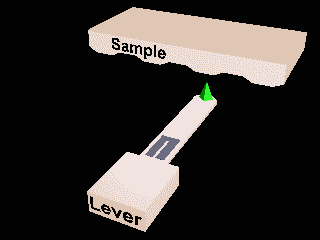

Reconstructing the solvation structure of hydrated surfaces in 3D: theory and experiment¶
 |
 |
Canonical tip models
64 atom MgO cubes
|
Anion termination |
Cation termination |
Canonical tip models - Anion
Canonical tip models - Cation
Small Fluorite tip
72 atom clusters
Tip model used for AFM in liquid simulations
Small Fluorite tip
270 atom Fluorite tip I
Bigger cluster. Simulated annealling to find stable structure
Tip model used for AFM in liquid simulations
270 atom Fluorite tip I
270 atom Fluorite tip V
Bigger cluster. Re annealled to find more stable structure
270 atom Fluorite tip V
270 atom Fluorite tip V, rotated
270 atom Fluorite tip V - rotated and reflected
324 atom Fluorite tip
Bigger cluster. Annealled around crystal seed to find more stable structure
324 atom Fluorite tip 77K
324 atom Fluorite tip 300K
SiF tip model
Fluorine teminated silicon tips?
SiF tip model
Fluorine teminated silicon tips?
Si dimer tip model
dimer teminated silicon tips?
Scanning probes¶
|  |
Atomic force microscopy (left) and Scanning Tunnelling microscopy (right) |
 |
- Local measurements.
- Invasive?
- Ambient or liquid conditions?